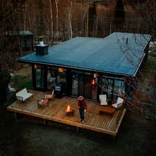
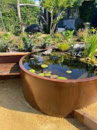

Start with the right tools
A good selection of quality tools is essential for all your garden needs and will ensure that your plants and lawn thrive. It'll also make garden maintenance a lot easier and more manageable. 'Alongside the all-important lawn mower, in my arsenal I always have a pair of great secateurs, shears (either manual or electric), a pruning saw, a long-handled trowel, a hand fork and a garden hoe for weeding,' says Simon Toomer, curator of living collections at Royal Botanic Gardens, Kew.
Plant a container with summer bedding plants
This is one of the easiest things to do to add instant colour to a drab backyard, says Angela Slater, gardening expert at Hayes Garden World. Plants don’t have to be colour coordinated either, they can be a riot of colour and still look fantastic. Summer bedding plants (geraniums, petunias and cosmos, to name a few) are not hugely expensive and you can pick up an inexpensive plastic container for just a couple of pounds. Use container and basket compost, which also contains some fertiliser and water retention gel – it saves you from giving additional feed and means the plants will also survive dry periods for longer.
Create somewhere to sit in the sunshine and chill
Identify a sunny sheltered corner of your garden and set about making it a comfortable and welcoming place to sit and relax. Start by tidying the area and getting rid of all the junk, or weeding and digging over the garden. If you're making-over a corner of a backyard, start by painting the wall or fence. Add plants to containers or a border to soften the hard landscape and absorb the noise from the road or next door. Choose plants which are scented to give you a more relaxing atmosphere, such as roses, honeysuckle or sweet peas. Furnish your 'outdoor living room' with a garden sofa or day bed, cushions, a rug, a pair of lounge chairs and some string lights. Kit out your space for when the temperature drops too by investing in a fire pit or patio heater.
Create a pond
To increase biodiversity in your garden, think about all the ways you can introduce water features such as ponds or birdbaths to attract amphibians, insects and birds. You can create a DIY pond in just a few simple steps. 'All you need to do is collect a few pebbles and stones. Then, dig a hole in the garden and line the hole with a pond liner. Keep the liner in place by layering pebbles, rocks and stones around the outside of the hole. These will also hide the edges of the liner. Then, fill the hole with water to create your pond,' explains Fiona Jenkins, a landscaper and gardening expert at MyJobQuote.co.uk. Otherwise, you can just use a large pot or container to create a makeshift pond with equally great results.
